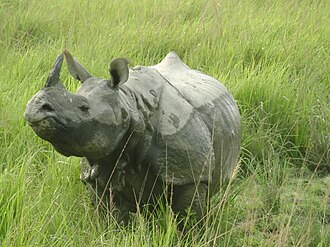

Assam is a state in northeastern India, south of the eastern Himalayas along the Brahmaputra and Barak River
valleys. Assam covers an area of 78,438 km2 (30,285 sq mi). It is the second largest state in northeastern India
by area and the largest in terms of population, with more than 31 million inhabitants. The state is bordered by
Bhutan and Arunachal Pradesh to the north; Nagaland and Manipur to the east; Meghalaya, Tripura, Mizoram and
Bangladesh to the south; and West Bengal to the west via the Siliguri Corridor, a 22-kilometre-wide (14 mi)
strip of land that connects the state to the rest of India. Assamese and Bodo are two of the official languages
for the entire state and Meitei (Manipuri) is recognised as an additional official language in three districts
of Barak Valley and Hojai district. in Hojai district and for the Barak valley region, alongside Bengali,
which is also an official language in the Barak Valley.
